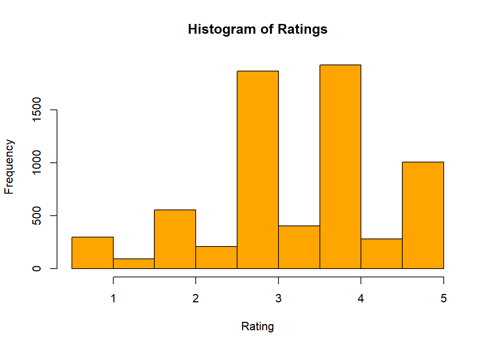

library(dslabs)
library(skimr) #added skimrR Coding Exercise
Contributed by: Prasanga Paudel
Load the dslabs package
Help file for the gapminder data
help(gapminder)starting httpd help server ... doneLook at the data structure
str(gapminder)'data.frame': 10545 obs. of 9 variables:
$ country : Factor w/ 185 levels "Albania","Algeria",..: 1 2 3 4 5 6 7 8 9 10 ...
$ year : int 1960 1960 1960 1960 1960 1960 1960 1960 1960 1960 ...
$ infant_mortality: num 115.4 148.2 208 NA 59.9 ...
$ life_expectancy : num 62.9 47.5 36 63 65.4 ...
$ fertility : num 6.19 7.65 7.32 4.43 3.11 4.55 4.82 3.45 2.7 5.57 ...
$ population : num 1636054 11124892 5270844 54681 20619075 ...
$ gdp : num NA 1.38e+10 NA NA 1.08e+11 ...
$ continent : Factor w/ 5 levels "Africa","Americas",..: 4 1 1 2 2 3 2 5 4 3 ...
$ region : Factor w/ 22 levels "Australia and New Zealand",..: 19 11 10 2 15 21 2 1 22 21 ...Summarize the data
summary(gapminder) country year infant_mortality life_expectancy
Albania : 57 Min. :1960 Min. : 1.50 Min. :13.20
Algeria : 57 1st Qu.:1974 1st Qu.: 16.00 1st Qu.:57.50
Angola : 57 Median :1988 Median : 41.50 Median :67.54
Antigua and Barbuda: 57 Mean :1988 Mean : 55.31 Mean :64.81
Argentina : 57 3rd Qu.:2002 3rd Qu.: 85.10 3rd Qu.:73.00
Armenia : 57 Max. :2016 Max. :276.90 Max. :83.90
(Other) :10203 NA's :1453
fertility population gdp continent
Min. :0.840 Min. :3.124e+04 Min. :4.040e+07 Africa :2907
1st Qu.:2.200 1st Qu.:1.333e+06 1st Qu.:1.846e+09 Americas:2052
Median :3.750 Median :5.009e+06 Median :7.794e+09 Asia :2679
Mean :4.084 Mean :2.701e+07 Mean :1.480e+11 Europe :2223
3rd Qu.:6.000 3rd Qu.:1.523e+07 3rd Qu.:5.540e+10 Oceania : 684
Max. :9.220 Max. :1.376e+09 Max. :1.174e+13
NA's :187 NA's :185 NA's :2972
region
Western Asia :1026
Eastern Africa : 912
Western Africa : 912
Caribbean : 741
South America : 684
Southern Europe: 684
(Other) :5586 Determine the type of object gapminder is
class(gapminder)[1] "data.frame"Load the tidyverse library
library(tidyverse)── Attaching core tidyverse packages ──────────────────────── tidyverse 2.0.0 ──
✔ dplyr 1.1.4 ✔ readr 2.1.5
✔ forcats 1.0.0 ✔ stringr 1.5.1
✔ ggplot2 3.5.0 ✔ tibble 3.2.1
✔ lubridate 1.9.4 ✔ tidyr 1.3.1
✔ purrr 1.0.2
── Conflicts ────────────────────────────────────────── tidyverse_conflicts() ──
✖ dplyr::filter() masks stats::filter()
✖ dplyr::lag() masks stats::lag()
ℹ Use the conflicted package (<http://conflicted.r-lib.org/>) to force all conflicts to become errorsCreate a dataset with only African countries
africadata = gapminder %>% filter (continent=="Africa")Look at the data structure of africadata
str(africadata)'data.frame': 2907 obs. of 9 variables:
$ country : Factor w/ 185 levels "Albania","Algeria",..: 2 3 18 22 26 27 29 31 32 33 ...
$ year : int 1960 1960 1960 1960 1960 1960 1960 1960 1960 1960 ...
$ infant_mortality: num 148 208 187 116 161 ...
$ life_expectancy : num 47.5 36 38.3 50.3 35.2 ...
$ fertility : num 7.65 7.32 6.28 6.62 6.29 6.95 5.65 6.89 5.84 6.25 ...
$ population : num 11124892 5270844 2431620 524029 4829291 ...
$ gdp : num 1.38e+10 NA 6.22e+08 1.24e+08 5.97e+08 ...
$ continent : Factor w/ 5 levels "Africa","Americas",..: 1 1 1 1 1 1 1 1 1 1 ...
$ region : Factor w/ 22 levels "Australia and New Zealand",..: 11 10 20 17 20 5 10 20 10 10 ...Summarize the data
summary(africadata) country year infant_mortality life_expectancy
Algeria : 57 Min. :1960 Min. : 11.40 Min. :13.20
Angola : 57 1st Qu.:1974 1st Qu.: 62.20 1st Qu.:48.23
Benin : 57 Median :1988 Median : 93.40 Median :53.98
Botswana : 57 Mean :1988 Mean : 95.12 Mean :54.38
Burkina Faso: 57 3rd Qu.:2002 3rd Qu.:124.70 3rd Qu.:60.10
Burundi : 57 Max. :2016 Max. :237.40 Max. :77.60
(Other) :2565 NA's :226
fertility population gdp continent
Min. :1.500 Min. : 41538 Min. :4.659e+07 Africa :2907
1st Qu.:5.160 1st Qu.: 1605232 1st Qu.:8.373e+08 Americas: 0
Median :6.160 Median : 5570982 Median :2.448e+09 Asia : 0
Mean :5.851 Mean : 12235961 Mean :9.346e+09 Europe : 0
3rd Qu.:6.860 3rd Qu.: 13888152 3rd Qu.:6.552e+09 Oceania : 0
Max. :8.450 Max. :182201962 Max. :1.935e+11
NA's :51 NA's :51 NA's :637
region
Eastern Africa :912
Western Africa :912
Middle Africa :456
Northern Africa :342
Southern Africa :285
Australia and New Zealand: 0
(Other) : 0 Create a new object - with infant mortality and life expectancy
africa_mortality_expectancy = africadata %>% select(infant_mortality, life_expectancy)Look at the data structure and summarize the data
str(africa_mortality_expectancy)'data.frame': 2907 obs. of 2 variables:
$ infant_mortality: num 148 208 187 116 161 ...
$ life_expectancy : num 47.5 36 38.3 50.3 35.2 ...summary(africa_mortality_expectancy) infant_mortality life_expectancy
Min. : 11.40 Min. :13.20
1st Qu.: 62.20 1st Qu.:48.23
Median : 93.40 Median :53.98
Mean : 95.12 Mean :54.38
3rd Qu.:124.70 3rd Qu.:60.10
Max. :237.40 Max. :77.60
NA's :226 Create a new object - with population and life expectancy
africa_population_expectancy = africadata %>% select(population, life_expectancy)Look at the data structure and summarize the data
str(africa_population_expectancy)'data.frame': 2907 obs. of 2 variables:
$ population : num 11124892 5270844 2431620 524029 4829291 ...
$ life_expectancy: num 47.5 36 38.3 50.3 35.2 ...summary(africa_population_expectancy) population life_expectancy
Min. : 41538 Min. :13.20
1st Qu.: 1605232 1st Qu.:48.23
Median : 5570982 Median :53.98
Mean : 12235961 Mean :54.38
3rd Qu.: 13888152 3rd Qu.:60.10
Max. :182201962 Max. :77.60
NA's :51 Plot for life expectancy as a function of infant mortality
ggplot(data=africa_mortality_expectancy, mapping=aes(x=infant_mortality, y=life_expectancy)) + geom_point()Warning: Removed 226 rows containing missing values or values outside the scale range
(`geom_point()`).Plot for life expectancy as a function of population
ggplot(data=africa_population_expectancy, mapping=aes(x=population, y=life_expectancy)) + geom_point() + scale_x_log10() Warning: Removed 51 rows containing missing values or values outside the scale range
(`geom_point()`).Look at the africadata
summary(africadata) country year infant_mortality life_expectancy
Algeria : 57 Min. :1960 Min. : 11.40 Min. :13.20
Angola : 57 1st Qu.:1974 1st Qu.: 62.20 1st Qu.:48.23
Benin : 57 Median :1988 Median : 93.40 Median :53.98
Botswana : 57 Mean :1988 Mean : 95.12 Mean :54.38
Burkina Faso: 57 3rd Qu.:2002 3rd Qu.:124.70 3rd Qu.:60.10
Burundi : 57 Max. :2016 Max. :237.40 Max. :77.60
(Other) :2565 NA's :226
fertility population gdp continent
Min. :1.500 Min. : 41538 Min. :4.659e+07 Africa :2907
1st Qu.:5.160 1st Qu.: 1605232 1st Qu.:8.373e+08 Americas: 0
Median :6.160 Median : 5570982 Median :2.448e+09 Asia : 0
Mean :5.851 Mean : 12235961 Mean :9.346e+09 Europe : 0
3rd Qu.:6.860 3rd Qu.: 13888152 3rd Qu.:6.552e+09 Oceania : 0
Max. :8.450 Max. :182201962 Max. :1.935e+11
NA's :51 NA's :51 NA's :637
region
Eastern Africa :912
Western Africa :912
Middle Africa :456
Northern Africa :342
Southern Africa :285
Australia and New Zealand: 0
(Other) : 0 We have data for the same country multiple times (over multiple years) - the data spans time from 1960 to 2016, so the population grows over time. Since we have multiple years of data for multiple countries, it is difficult to identify patterns. We can take a look at a single year and try to see if the plot looks different.
First, find missing values in africadata by year.
missing_infant_mortality = africadata %>%
group_by(year) %>%
summarize(missing_values = sum(is.na(infant_mortality)))
print(missing_infant_mortality)# A tibble: 57 × 2
year missing_values
<int> <int>
1 1960 10
2 1961 17
3 1962 16
4 1963 16
5 1964 15
6 1965 14
7 1966 13
8 1967 11
9 1968 11
10 1969 7
# ℹ 47 more rowsWe can see that there are missing values upto 1980, and then in 2016. Create an object with only data from 2000.
africa2000data = africadata %>% filter(year==2000)Look at the data structure and summarize the data
str(africa2000data)'data.frame': 51 obs. of 9 variables:
$ country : Factor w/ 185 levels "Albania","Algeria",..: 2 3 18 22 26 27 29 31 32 33 ...
$ year : int 2000 2000 2000 2000 2000 2000 2000 2000 2000 2000 ...
$ infant_mortality: num 33.9 128.3 89.3 52.4 96.2 ...
$ life_expectancy : num 73.3 52.3 57.2 47.6 52.6 46.7 54.3 68.4 45.3 51.5 ...
$ fertility : num 2.51 6.84 5.98 3.41 6.59 7.06 5.62 3.7 5.45 7.35 ...
$ population : num 31183658 15058638 6949366 1736579 11607944 ...
$ gdp : num 5.48e+10 9.13e+09 2.25e+09 5.63e+09 2.61e+09 ...
$ continent : Factor w/ 5 levels "Africa","Americas",..: 1 1 1 1 1 1 1 1 1 1 ...
$ region : Factor w/ 22 levels "Australia and New Zealand",..: 11 10 20 17 20 5 10 20 10 10 ...summary(africa2000data) country year infant_mortality life_expectancy
Algeria : 1 Min. :2000 Min. : 12.30 Min. :37.60
Angola : 1 1st Qu.:2000 1st Qu.: 60.80 1st Qu.:51.75
Benin : 1 Median :2000 Median : 80.30 Median :54.30
Botswana : 1 Mean :2000 Mean : 78.93 Mean :56.36
Burkina Faso: 1 3rd Qu.:2000 3rd Qu.:103.30 3rd Qu.:60.00
Burundi : 1 Max. :2000 Max. :143.30 Max. :75.00
(Other) :45
fertility population gdp continent
Min. :1.990 Min. : 81154 Min. :2.019e+08 Africa :51
1st Qu.:4.150 1st Qu.: 2304687 1st Qu.:1.274e+09 Americas: 0
Median :5.550 Median : 8799165 Median :3.238e+09 Asia : 0
Mean :5.156 Mean : 15659800 Mean :1.155e+10 Europe : 0
3rd Qu.:5.960 3rd Qu.: 17391242 3rd Qu.:8.654e+09 Oceania : 0
Max. :7.730 Max. :122876723 Max. :1.329e+11
region
Eastern Africa :16
Western Africa :16
Middle Africa : 8
Northern Africa : 6
Southern Africa : 5
Australia and New Zealand: 0
(Other) : 0 Plot for life expectancy as a function of infant mortality
ggplot(data=africa2000data, mapping=aes(x=infant_mortality, y=life_expectancy)) +geom_point()Plot for life expectancy as a function of population
ggplot(data=africa2000data, mapping=aes(x=population, y=life_expectancy)) + geom_point() + scale_x_log10()Fitting a model to predict life expectancy using infant mortality
lm_mortality = lm(life_expectancy ~ infant_mortality, data=africa2000data)
summary(lm_mortality)
Call:
lm(formula = life_expectancy ~ infant_mortality, data = africa2000data)
Residuals:
Min 1Q Median 3Q Max
-22.6651 -3.7087 0.9914 4.0408 8.6817
Coefficients:
Estimate Std. Error t value Pr(>|t|)
(Intercept) 71.29331 2.42611 29.386 < 2e-16 ***
infant_mortality -0.18916 0.02869 -6.594 2.83e-08 ***
---
Signif. codes: 0 '***' 0.001 '**' 0.01 '*' 0.05 '.' 0.1 ' ' 1
Residual standard error: 6.221 on 49 degrees of freedom
Multiple R-squared: 0.4701, Adjusted R-squared: 0.4593
F-statistic: 43.48 on 1 and 49 DF, p-value: 2.826e-08Fitting a model to predict life expectancy using population
lm_population = lm(life_expectancy ~ population, data=africa2000data)
summary(lm_population)
Call:
lm(formula = life_expectancy ~ population, data = africa2000data)
Residuals:
Min 1Q Median 3Q Max
-18.429 -4.602 -2.568 3.800 18.802
Coefficients:
Estimate Std. Error t value Pr(>|t|)
(Intercept) 5.593e+01 1.468e+00 38.097 <2e-16 ***
population 2.756e-08 5.459e-08 0.505 0.616
---
Signif. codes: 0 '***' 0.001 '**' 0.01 '*' 0.05 '.' 0.1 ' ' 1
Residual standard error: 8.524 on 49 degrees of freedom
Multiple R-squared: 0.005176, Adjusted R-squared: -0.01513
F-statistic: 0.2549 on 1 and 49 DF, p-value: 0.6159We can see that for the first model (using infant mortality), the p-value for infant mortality is less than 0.05, thus we can conclude that infant mortality is a useful predictor of life expectancy. The R-squared is 0.005176. Thus, while infant mortality is a useful predictor, this model is not able to explain a large potion of the variability in the life expectancy, and other variables should be considered.
For the second model (using population), the p-value for population is greater than 0.05, thus we can conclude that population is not a useful predictor of life expectancy.
help(movielens)1 This section is contributed by Prasanga Paudel
1.1 Discriptive statistics
We will use the movielens dataset from the dslab. The discriptive stat for the datasets will be discussed in this section.
help("movielens") #looking a the help file for movielens data
str(movielens) # getting an overview of the data structire'data.frame': 100004 obs. of 7 variables:
$ movieId : int 31 1029 1061 1129 1172 1263 1287 1293 1339 1343 ...
$ title : chr "Dangerous Minds" "Dumbo" "Sleepers" "Escape from New York" ...
$ year : int 1995 1941 1996 1981 1989 1978 1959 1982 1992 1991 ...
$ genres : Factor w/ 901 levels "(no genres listed)",..: 762 510 899 120 762 836 81 762 844 899 ...
$ userId : int 1 1 1 1 1 1 1 1 1 1 ...
$ rating : num 2.5 3 3 2 4 2 2 2 3.5 2 ...
$ timestamp: int 1260759144 1260759179 1260759182 1260759185 1260759205 1260759151 1260759187 1260759148 1260759125 1260759131 ...summary(movielens) # getting a summary of the movielens dataset movieId title year
Min. : 1 Length:100004 Min. :1902
1st Qu.: 1028 Class :character 1st Qu.:1987
Median : 2406 Mode :character Median :1995
Mean : 12549 Mean :1992
3rd Qu.: 5418 3rd Qu.:2001
Max. :163949 Max. :2016
NA's :7
genres userId rating timestamp
Drama : 7757 Min. : 1 Min. :0.500 Min. :7.897e+08
Comedy : 6748 1st Qu.:182 1st Qu.:3.000 1st Qu.:9.658e+08
Comedy|Romance : 3973 Median :367 Median :4.000 Median :1.110e+09
Drama|Romance : 3462 Mean :347 Mean :3.544 Mean :1.130e+09
Comedy|Drama : 3272 3rd Qu.:520 3rd Qu.:4.000 3rd Qu.:1.296e+09
Comedy|Drama|Romance: 3204 Max. :671 Max. :5.000 Max. :1.477e+09
(Other) :71588 class(movielens) # obtaining the type of object movielens is[1] "data.frame"We will look into the variable year to find a year that will have high number of observation so that we can use it for our analysis.
table(movielens$year) # creating a table for variable year
1902 1915 1916 1917 1918 1919 1920 1921 1922 1923 1924 1925 1926 1927 1928 1929
6 2 1 2 2 1 15 12 28 3 10 40 20 38 21 18
1930 1931 1932 1933 1934 1935 1936 1937 1938 1939 1940 1941 1942 1943 1944 1945
31 98 44 74 75 73 65 125 100 288 317 254 221 42 162 75
1946 1947 1948 1949 1950 1951 1952 1953 1954 1955 1956 1957 1958 1959 1960 1961
193 87 119 99 236 243 152 218 346 290 170 316 246 368 304 296
1962 1963 1964 1965 1966 1967 1968 1969 1970 1971 1972 1973 1974 1975 1976 1977
368 352 429 249 226 434 473 282 295 641 449 525 540 712 471 674
1978 1979 1980 1981 1982 1983 1984 1985 1986 1987 1988 1989 1990 1991 1992 1993
602 885 1123 970 1240 1014 1581 1427 1769 1646 1689 2198 2105 1914 2301 4214
1994 1995 1996 1997 1998 1999 2000 2001 2002 2003 2004 2005 2006 2007 2008 2009
5861 6635 5109 4060 4019 5034 4054 3442 3090 2508 2879 1852 1786 1606 1544 1375
2010 2011 2012 2013 2014 2015 2016
1238 926 939 839 798 535 124 I will pick year 1995 as it has one of the highest number of movies.
1.2 Data Summary for the 1995 dataset
year1995 <- movielens %>% filter(year ==1995) #filtering year-2000 to make a new dataset
str(year1995) # getting an overview of the data structire of 1995 dataset'data.frame': 6635 obs. of 7 variables:
$ movieId : int 31 10 17 39 47 50 52 62 110 144 ...
$ title : chr "Dangerous Minds" "GoldenEye" "Sense and Sensibility" "Clueless" ...
$ year : int 1995 1995 1995 1995 1995 1995 1995 1995 1995 1995 ...
$ genres : Factor w/ 901 levels "(no genres listed)",..: 762 124 820 687 888 743 646 762 271 596 ...
$ userId : int 1 2 2 2 2 2 2 2 2 2 ...
$ rating : num 2.5 4 5 5 4 4 3 3 4 3 ...
$ timestamp: int 1260759144 835355493 835355681 835355604 835355552 835355586 835356031 835355749 835355532 835356016 ...summary(year1995) # geting a summary of the dataset movieId title year
Min. : 1.0 Length:6635 Min. :1995
1st Qu.: 32.0 Class :character 1st Qu.:1995
Median : 110.0 Mode :character Median :1995
Mean : 268.8 Mean :1995
3rd Qu.: 186.0 3rd Qu.:1995
Max. :136592.0 Max. :1995
genres userId
Comedy|Romance : 510 Min. : 1.0
Comedy : 468 1st Qu.:165.0
Drama|Romance : 395 Median :363.0
Action|Crime|Thriller : 370 Mean :346.4
Drama : 334 3rd Qu.:520.0
Adventure|Animation|Children|Comedy|Fantasy: 247 Max. :671.0
(Other) :4311
rating timestamp
Min. :0.500 Min. :7.897e+08
1st Qu.:3.000 1st Qu.:8.476e+08
Median :3.500 Median :9.575e+08
Mean :3.472 Mean :1.010e+09
3rd Qu.:4.000 3rd Qu.:1.116e+09
Max. :5.000 Max. :1.476e+09
1.3 Comparing new dataset with the overall dataset
The below histogram shows the distribution of the rating variable in the entire dataset
hist(movielens$rating, # this gives a histogram for rating
main = "Histogram of Ratings", # setting the title
xlab = "Rating", #setting x-axis
col = "orange", # setting color
breaks = 10) # setting the bars to 5 using 10 ratingsThe below histogram shows the distribution of rating variable within the year 1995.
hist(year1995$rating, # this gives a histogram for rating
main = "Histogram of Ratings", #setting the title
xlab = "Rating", #setting x-axis
col = "orange", #setting the color
breaks = 10) # setting the bars to 10 and using 10 ratings
1.4 frequency distrbution of Rating in 1995 dataset.
# Counting the occurrences of each rating
rating_counts <- table(year1995$rating) #creating a table based on count
# Displaying the table
print(rating_counts)
0.5 1 1.5 2 2.5 3 3.5 4 4.5 5
53 246 93 555 210 1866 403 1922 282 1005 1.5 Boxplot of selected genres and Rating ( year 1995)
# Filtering the data to include only Drama, Comedy, and Action
filtered_data <- subset(year1995, genres %in% c("Drama", "Comedy", "Action"))
ggplot(filtered_data, aes(x = genres, y = rating)) + #setting the axis
geom_boxplot() +
labs(title = "Ratings across different genres",
x = "Genres", #naming axis
y = "Rating") +
theme(axis.text.x = element_text(angle = 45, hjust = 1)) #costomizing labels1.6 Statistical test for difference in ratings among genres
We will perform few test to analyse if there is a significant difference in ovies ratings among various ganres.
1.6.1 T-test
We will perform a T-test to analyze if action and comedy genres have a statistically different ratings.
# Filtering the rating data for Action and Comedy genres
action_ratings <- year1995$rating[year1995$genres == "Action"]
comedy_ratings <- year1995$rating[year1995$genres == "Comedy"]
# Perform a t-test, H0: action rating = comedy rating, Ha: action > comedy
t_test_result <- t.test(action_ratings, comedy_ratings, alternative = "greater") #testing the hypothesis that mean rating for the "Action" genre is greater than that for the "Comedy" genre.
# Display the results
print(t_test_result)
Welch Two Sample t-test
data: action_ratings and comedy_ratings
t = -1.0358, df = 74.916, p-value = 0.8482
alternative hypothesis: true difference in means is greater than 0
95 percent confidence interval:
-0.3924665 Inf
sample estimates:
mean of x mean of y
2.983051 3.133547 Since the p-value is greater than 0.05, we fail to reject the null. The rating between the two genres are not statistically significant.
1.6.2 Linear Regression
# Running the simple linear regression with ratings predicted using genres
model <- lm(rating ~ genres, data = filtered_data)
# View the summary of the model
summary(model)
Call:
lm(formula = rating ~ genres, data = filtered_data)
Residuals:
Min 1Q Median 3Q Max
-2.9057 -0.4057 -0.1336 0.8665 2.0170
Coefficients:
Estimate Std. Error t value Pr(>|t|)
(Intercept) 2.9831 0.1394 21.405 < 2e-16 ***
genresComedy 0.1505 0.1479 1.018 0.30913
genresDrama 0.4226 0.1512 2.796 0.00529 **
---
Signif. codes: 0 '***' 0.001 '**' 0.01 '*' 0.05 '.' 0.1 ' ' 1
Residual standard error: 1.07 on 858 degrees of freedom
Multiple R-squared: 0.01823, Adjusted R-squared: 0.01595
F-statistic: 7.968 on 2 and 858 DF, p-value: 0.0003727Results show that the Drama genre has a significantly higher rating than the base( Action) genre.